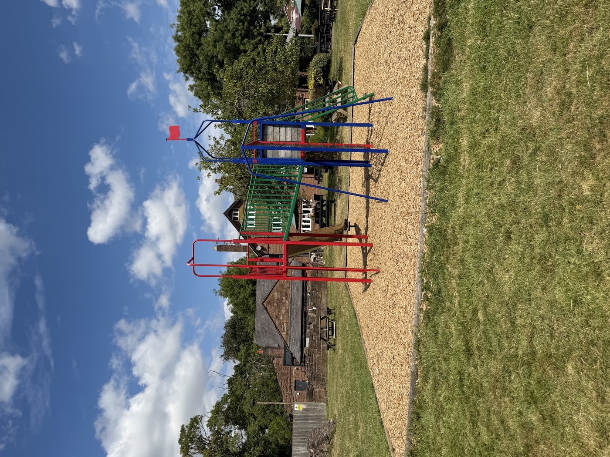
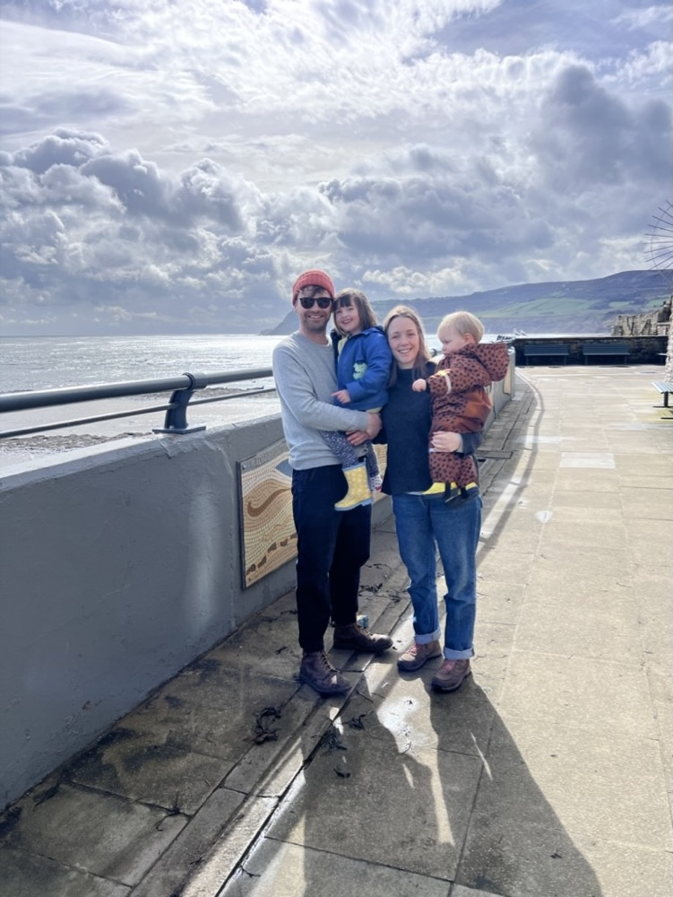

Checked 14 July 2026
The Old Thatch
285 Wimborne Rd W, Ferndown, Wimborne BH21 7NW, UK- Outdoor playground
- Children’s menu
- Baby change
The UK family pub finder
Browse checked UK pubs and hotels with real playgrounds, play areas, useful family facilities and photos that help you know what to expect.
For the full experience, download the app. Get the complete UK map, nearby search, saved pubs and more.


Start nearby
Looking for a pub with a playground, children’s play area or play park? Use a regional guide for a checked shortlist, or download the app to search the complete UK map near you.
Recently checked

Know before you go
The app gives you the complete UK map, nearby pubs, saved favourites and the family details that are easy to miss on a pub website.
How it works
No vague “family-friendly” label. Check what is actually there before committing to the drive.
Browse the website by region or use the app to search the full map around you.
See photos, recorded play types, practical facilities and when the listing was last checked.
Open directions, save favourites and confirm current food service with the venue.
Rated by parents
“Great easy app, I've discovered local pubs with great play areas for my toddler.”
“Such a good idea! A simple app which I am sure I will refer to and update.”
“Love that you can add photos and menus! Garden play is important but so is good food.”

Started by a parent
Pubs With Playgrounds was started by Alastair Duncan, a dad of two. It is a free UK pub finder for parents who want to know whether “family friendly” includes somewhere children can actually play.
Listings combine pub websites, Google place information, parent reports, photos and direct corrections from pubs where available.
In the press
Ready when you are
Browse checked listings on the website or use the free app for the complete UK map.